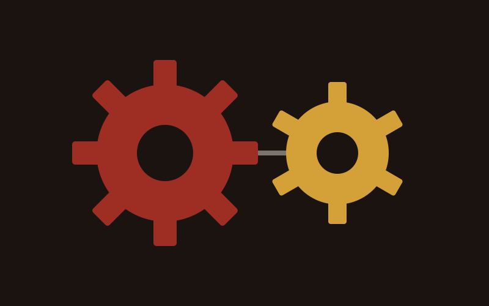
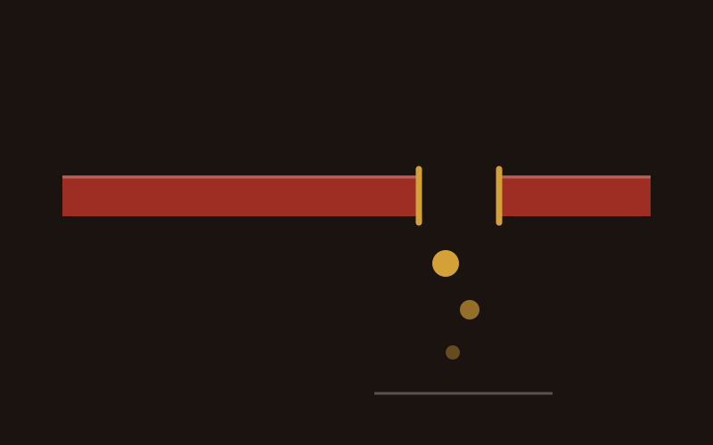
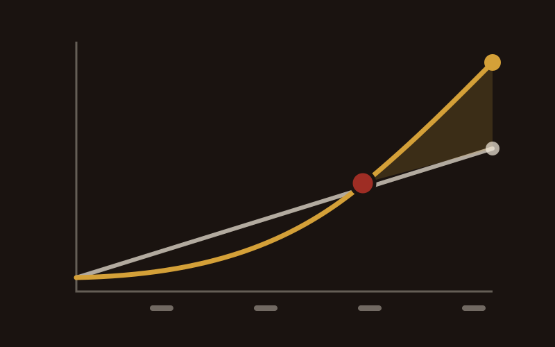

NDIS Digital Marketing & Acceleration
Digital is how small and medium providers get found. Here is what belongs in the plan.
Read more
Marketing is the engine, and it only turns when sales is connected to it. This is what marketing actually does, how to choose where to spend, and how to tell which part is doing the work.
Marketing is not the slogan and it is not the logo, although both turn up in it. It is the engine that brings people to your business and makes them willing to trust you with something that matters. It touches five things, and they run in order.
Being known. A recognisable identity, so that when your name comes up in a conversation it means something. Being found. Reaching the people who actually want what you do and turning them into enquiries. Being trusted. Building enough of a relationship that people come back and recommend you. Being chosen. Moving somebody from interested to signed. And being kept. Looking after the people you already have, which is cheaper than replacing them and almost always neglected.
Each one feeds the next. Skip the third and the fourth stops working, which is why campaigns that go straight for the sale so often produce clicks and nothing else.
Underneath those five, a business really has two engines. One brings strangers in. The other gets you recommended by the people who already know you. Ads, search and content are the first. Referral relationships, partnerships and the reputation you earn by doing the work well are the second.
The second engine is cheaper, converts far better and takes longer to build. Almost every business I look at is running one of the two and calling it a growth strategy.

Marketing without a defined audience is a net thrown into the ocean in the hope of catching something. It sometimes works, it is never repeatable, and you cannot tell afterwards what you did right.
The alternative is a smaller, more precise net. Define who you are actually for, then write to that person instead of to everybody.
Where they already spend their time, online and off. What actually drives the decision, which is rarely the thing your brochure leads with. How comfortable they are with technology. What they are worried about at the moment they start looking. And what objection is sitting in their head that you could answer before they have to raise it.
That last one is worth more than the rest put together. If you know the three reasons somebody hesitates, you can handle all three on the page and never have the conversation.
Not imagining. Standing. Read your own enquiry emails as if you had never heard of your business. Ring your own phone line at four on a Friday. Ask three customers what nearly stopped them, and listen to the answer rather than defending against it. Understand somebody better than they have bothered to understand themselves and choosing the right channel becomes straightforward, because you already know where they are.
Marketing and sales are two halves of one movement, and they get run as separate departments that barely speak. This is the most expensive thing in this article, so here is the picture I use.
You walk past a restaurant. The menu out the front catches your eye, and there is a dish on it you want. That menu is the marketing. You go in, sit down and ask for the dish. The waiter has never seen the new menu and has no idea what you are talking about.
What happens next? You do not walk out. You do something worse: you start second-guessing every judgement you had just made about the place. The marketing worked perfectly and the business still lost, because the two halves were not connected.
An ad promising same-week availability, landing on a team who do not know the promise was made. A campaign for a service the phone team cannot price. Enquiries arriving in a form nobody has the login for. A follow-up that never happens because it was nobody's job.
Marketing generates qualified leads. Sales turns them into customers. If the second half does not know what the first half said, you are paying to disappoint people at speed. Fix the handover before you increase the volume through it, every time.

If that sounds like your business, start there rather than with a channel. It is the enquiry process, and it is usually the cheapest fix available.
Channels are not interchangeable, and the right one depends entirely on where your buyer already is. The concept that decides it is the buyer's journey: how close somebody is to being ready.
Somebody typing plumber near me is at the bottom of the funnel. They have identified the problem, chosen the solution and are picking a supplier. Search catches that person. Somebody who has never heard of your service is at the top, and has to be made aware there is a solution at all before anything else can happen. Paid social, content and events do that job.
Picking a channel is just answering which of those two people you need more of this quarter.
If you take three things from this piece, take these.
Organic marketing earns its results over time: SEO, content, the reputation that builds when people talk about you. Paid marketing buys the result now: search ads, social ads, media spend.
Organic is a marathon. It needs consistent content, a site that works, and the patience to keep going through the months where nothing visible happens. What you get for that is an asset. The page that ranks keeps bringing people in next year with no further invoice.
Paid is a tap. You can be in front of a precisely defined audience this afternoon, test a message in a week rather than a quarter, and switch it off the moment it stops paying. What you get is speed, and what you give up is permanence.
Run paid to bring revenue in now, and build organic underneath it so that in a year the paid spend is a choice rather than the only thing keeping the lights on. Businesses that only ever run paid are renting their entire customer flow. Businesses that only run organic spend the first six months wondering whether any of it works.

Your brand is what your business is like to deal with, expressed in everything from what you stand for down to your colours and your typefaces. A business with a good product and no clear identity struggles, because there is nothing for anybody to connect to and nothing to remember.
A strong brand does one specific job: it makes the right person feel understood before you have said anything about your service.
Once you know your buyer, go back and look at the brand honestly. Take an exaggerated example to make the point: if the person you most want is a woman over fifty with money to spend who loves a bit of decadence, and your brand is heavy and masculine with a tattoo-parlour typeface on a black background, you will miss. The product could be perfect. She will never get far enough to find out.
Colours, typefaces, photography, the words you use, how quickly you reply, what your invoice looks like. It is all brand, and it either says the thing you meant or it says something else.

A brand is not what you say about yourself. It is what somebody expects before you open your mouth.
Chris Lapa
Whether you hire or outsource comes down to budget, what you need and what you already know. Both have a real shape.
In-house gives you control and a consistent voice, and an internal team can move faster and start something new the same week. It costs salaries, and it will not contain a specialist in every discipline you need.
Outsourced buys you expertise you could not justify employing. It needs clear communication to work at all, and it can cost more per hour. The arrangement that works best in practice is done with you: you keep a marketing manager who owns the plan and the brand, and bring in specialists for the parts that need one, such as search or paid media.
Whoever does the work, the reporting exists to change decisions. Track enquiries and where they came from, conversion rate, cost per enquiry, and what a customer is worth over the whole relationship. Sharpen those and the same budget goes further: cost per enquiry falls while the number of enquiries rises.
Use it to see which channel to feed and which to switch off, to tailor what you say to what you now know, and to notice a shift in the market while it is still early. And keep your own judgement in the room, because the data will tell you what happened and never why.
There is no single right answer. Five to ten per cent of revenue is a reasonable place to start the conversation, and the real number depends on your industry, how fast you are trying to grow and which channels you have chosen. Work backwards from what a customer is worth to you instead of forwards from a percentage.
Then you buy time instead of media. Content and organic social cost effort rather than spend, and they compound. Outsource single tasks rather than whole functions, and use freelancers for the specialist pieces. A small budget spent on one channel properly beats the same money spread across four.
It depends entirely which lever you pulled. Paid advertising can show you something within weeks. Organic takes months to build momentum and then keeps going. If somebody promises you fast organic results, they are either buying links or guessing.
Short-form video is genuinely where attention has moved, and phone-shot video from a real person in your business outperforms produced work. Beyond that, people expect to be treated as individuals rather than as a list. Most other trends are noise, and chasing them costs more than ignoring them.
Go and look at what they do properly. Read their site, sign up for their emails, see what they promise and how they say it. The gap you are looking for is the thing they all claim and none of them prove, and the way you stand out is by proving it.
Three things, in order. Define who you are for. Sort out your brand so it speaks to that person. Then make content that answers what they ask before they buy. Every channel decision after that is easier, and none of them work properly before it.
There are more marketing blogs and free courses than anybody can get through, and the good ones are the specific ones rather than the general ones. If you would rather talk it through against your own numbers, the audit below is free and I will tell you straight whether I can help.
If you would rather have the whole thing run as one plan by one person, that is Managed Growth.

Digital is how small and medium providers get found. Here is what belongs in the plan.
Read more

Reaching participants takes more than showing up. How Google Ads connects you with people actively searching for your services.
Read more

SEO makes your website show up when someone searches for what you do. Here's how that compounds over time.
Read more
The audit is free.